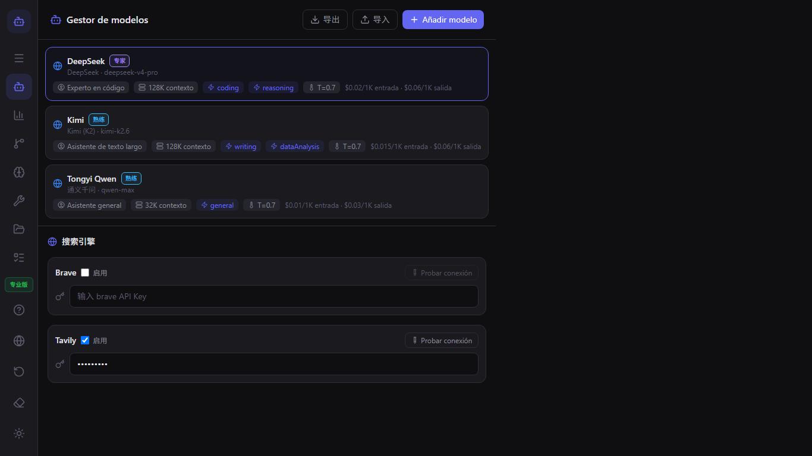
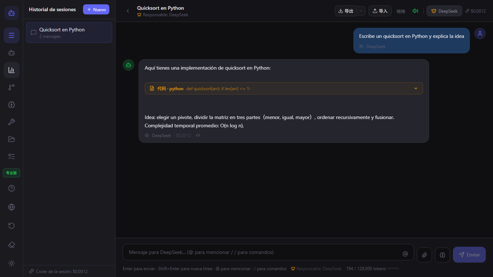
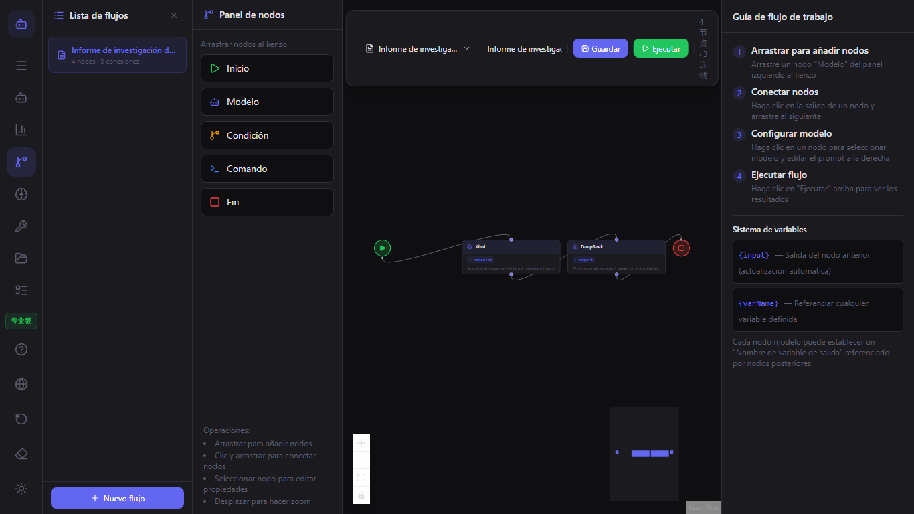
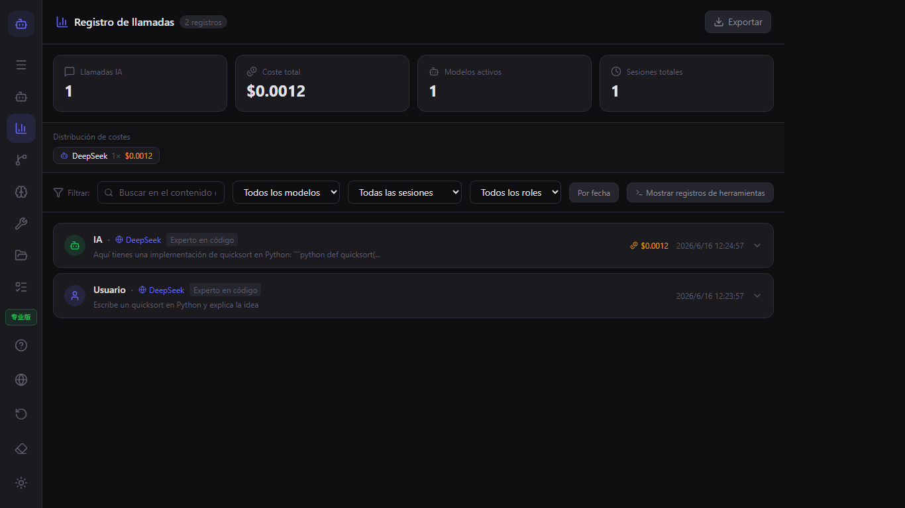

Guía de usuario de ModelFlow
Bienvenido a ModelFlow. Esta guía abarca todo, desde tu primera ejecución hasta flujos de trabajo avanzados con múltiples modelos.
Inicio rápido
- Descarga ModelFlow desde Microsoft Store.
- Abre la aplicación y completa la introducción.
- Añade tu primer modelo en el Administrador de modelos.
- Inicia un chat y escribe
@nombre-del-modelopara cambiar de modelo.
Gestión de modelos
Usa el Administrador de modelos para añadir modelos de texto, imagen, video y audio. Para cada modelo puedes configurar el proveedor, la clave de API, el rol, la ventana de contexto y los límites de costo.

Chat y menciones @
Escribe @ seguido del nombre de un modelo para dirigir la siguiente respuesta a ese modelo. Puedes encadenar varios modelos en la misma conversación.

Flujos de trabajo
Abre el Editor de flujos de trabajo para construir pipelines visuales. Arrastra nodos de modelo, nodos de condición y nodos de comando al lienzo, y luego conéctalos.

Plugins
ModelFlow admite plugins verificados y plugins de la comunidad. Instala plugins desde el Administrador de plugins o crea los tuyos propios.

CLI y herramientas locales
Los modelos pueden ejecutar comandos locales, leer archivos y listar directorios. Escribe /tool en el chat o añade un nodo de comando a un flujo de trabajo.

Registro de llamadas y costos
El Registro de llamadas rastrea cada llamada a IA, ejecución de herramientas, uso de tokens y costo estimado. Exporta los registros para su análisis.

Configuración y privacidad
ModelFlow es local-first. Tus sesiones, configuraciones de modelos y plugins se almacenan en tu máquina. Cambia el idioma, el espacio de trabajo y exporta datos en Configuración.